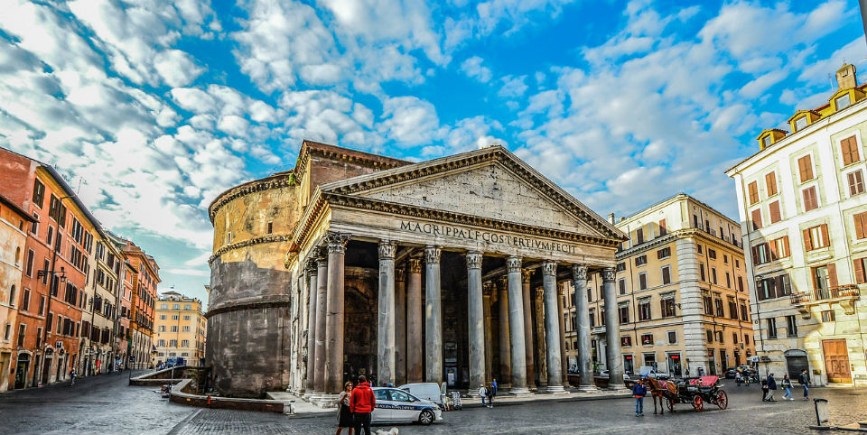

Пантеон
Тут все просякнуте духом античності, ніхто не знає, хто і як побудував цей храм. Всередині немає вікон, світло ллється з отвору в куполі, званим окулюсом.Пантеон був побудований до нашої ери та величезну кількість разів реставрувався. Спочатку храм був язичницькою спорудою, зараз він християнський. Це означає, що в нього не пускають з непокритими плечима й у відвертому одязі. Відвідування можуть заборонити, навіть якщо у вас кольорове волосся або на тілі є татуювання.Вхід в цей храм безкоштовний, тому краще прийти вранці, поки в ньому мінімум туристів.
"Попередня сторінка"